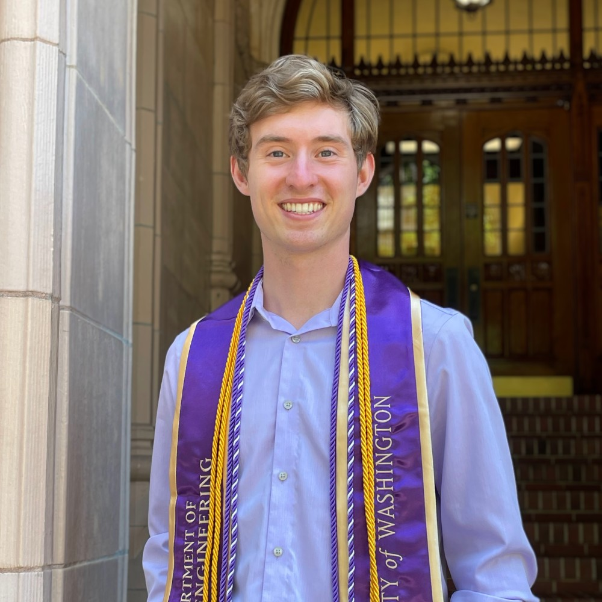

Beau Lonnquist (he/him)
Graduate Student · Biophysics
In the lab: 2026–present
Co-mentor: Brian Cheung
I'm intersted in multistate protein design methods for system-level and ensemble-based design.
NSF GRFP Fellow
Education
- B.S., Bioengineering, University of Washington, Seattle
Publications
- Glasscock, C. J., Pecoraro, R. J., McHugh, R., Doyle, L. A., Chen, W., Boivin, O., Lonnquist, B., Na, E., Politanska, Y., Haddox, H. K., Cox, D., Norn, C., Coventry, B., Goreshnik, I., Vafeados, D., Lee, G. R., Gordân, R., Stoddard, B. L., DiMaio, F. & Baker, D. Computational design of sequence-specific DNA-binding proteins. Nat. Struct. Mol. Biol. 32, 2252–2261 (2025).